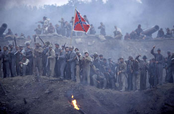

|
How do you get away with opening a Civil War tale with
one of the war's bloodiest battles in which black troops
played a pivotal role but ignore them, set much of the
film's action in the slave states of Virginia and North
Carolina, yet show only the briefest glimpse of black slaves
laboring in the fields, and have white Southern belles
mouthing anti-slavery platitudes? Cold Mountain film
director Anthony Minghella did, by tagging the word
"fiction" after "historical" and deftly ducking and dodging
the painful issues of slavery and race. Minghella is hardly
the first filmmaker to blink when it comes to tackling these
issues. They are still America's greatest and most enduring
bugaboos. But there's a troubling problem in his skirting of
these issues. Minghella spent much time and effort in trying
to make the film as historically credible as possible.
He hired Civil War military consultants, a period
historical painter and collector, and consulted with
historians to insure accuracy. The Union and Confederate
soldier's uniforms, insignias, and battle flags were exact.
The marching formations were precise. The Confederate
|

The Battle of the Crater.
as portrayed in Cold Mountain.
|
trenches and fortifications were near perfect replicas. And
the battlefield was meticulously recreated. Then there's the
gut wrenching, and prolonged, opening battle scene. This is
where the filmmakers dumped historical accuracy and reverted
to fiction. It was fought in July 1864 near Petersburg,
Virginia. The bloody and senseless battle was characterized
by monumental bungling by Union commanders. Black and white
Union soldiers were slaughtered during the attack. In the
ensuing carnage, the Confederate soldiers summarily executed
many of the black troops even as they tried to surrender.
The bloodletting and the heroic sacrifice of the black
troops were totally missing in the film. Were the filmmakers
worried that the raw, and brutal depiction of the racial
savagery inflicted on the black troops would have shocked an
audience's senses? Or worse, that showing the barbarism
would have been too racially inflammatory? They're false
fears. The countless films and documentaries that have
filled the big and little screen on the Holocaust have not
incited riots or fueled anti-Semitic violence. A
historically accurate depiction of the grim and gory aspects
of Nazi genocidal violence has broadened the public's
understanding of the danger of anti-Semitism, and the need
for continuing vigilance in the struggle against racism and
anti-Semitism.
If Cold Mountain had truthfully depicted the heroism,
tragedy, and sacrifice of the black soldiers in the battle,
this would have done much to destroy the twin myth that
black soldiers played only a peripheral role in the Civil
War, and that whites alone fought and died to end slavery.
Nearly 200,000 blacks enlisted to fight in the Union army.
The black divisions that fought in the Petersburg battle
suffered the greatest number of casualties that black troops
suffered in any of the Civil War battles. Cold Mountain's
historic blind spot to black battlefield valor is even more
inexplicable considering the wide acclaim of the 1987 film,
Glory. This depicted the heroism and the struggles of an
all-black regiment during the Civil War. In addition, there
have been a number of docudramas and PBS specials detailing
the exploits of black troops, or that have included them in
various Civil War battle scenes. There are also legions of
scholarly works, and articles on the pivotal role that
blacks played in the Union victory.
Perhaps the most galling thing about Cold Mountain's
whitewash of an important historical fact is that the film
could have accurately shown black troops fighting and dying
without sacrificing the film's romantic and Homeric Odyssey
story line. Cold Mountain's high profile, and highly
bankable stars, Nicole Kidman, Jude Law, and Renee Zellweger
would have still got their props, audiences would still have
crowded the theaters to see the film, critics would have
still piled mountains of praise on it, and it would still
have gotten its eight Golden globe nominations, and almost
certain strong Academy Award consideration.
Still, despite Cold Mountain's racial fumble, the film
could rekindle mild public interest in learning what really
happened on the killing fields at Petersburg on that grim
July day. The day after the film opened officials at the
Petersburg National battlefield announced that they would
offer walking tours of the key parts of the battlefield
where the main fighting took place.
The tours won't play to the huge theater going multitudes
that will see Cold Mountain. But they could help tell at
least some of the painful racial truths that Cold Mountain
cold-shouldered.
Source: Earl Ofari Hutchinson in the
Los Angeles Times, (January 19, 2004), E3.
|